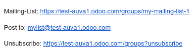

Grupos de correo¶
La función grupos de correo permite que los visitantes al sitio web tengan una discusión pública por correo. Pueden unirse a un grupo para recibir correos de otros miembros de ese grupo (es decir, usuarios del sitio web que se suscribieron al grupo) y enviar nuevos correos a todos los miembros.
Para activar esta función debe instalar el módulo Grupo de correo del sitio web (website_mail_group).
Nota
No confunda la función grupos de correo con Listas de correo en la aplicación de Marketing por correo electrónico.
Configuración de los grupos de correo¶
Para configurar grupos de correo, debe seguir los siguientes pasos:
Configure un seudónimo de dominio de correo, vaya a Ajsutes generales, baje a la sección de Conversaciones y active la funcionalidad Utilizar servidores de correo electrónico personalizados e ingrese el Dominio del seudónimo (por ejemplo.,
@miempresa.com).Vaya a , y haga clic en Nuevo.
Especifique el Nombre del grupo, el alias de correo y una descripción.
Active la opción Moderar este grupo y especifique a los Moderadores si quiere moderar los mensajes de este grupo. Sin embargo, si no moderará el grupo, puede seleccionar Usuarios responsables que pueden gestionar los mensajes en el grupo.
En la pestaña Privacidad defina quién se puede suscribir a este grupo de correo:
Todos: para que el grupo de correo sea público y todos se puedan suscribir;
Solo miembros: para que solo usuarios que estén definidos como miembros se puedan suscribir al grupo de correo;
Grupo de usuarios seleccionado: para que solo los usuarios que sean parte del Grupo autorizado se puedan suscribir al grupo de correo.
Si moderará el grupo de correo, puede notificar a los autores de manera automática cuando su mensaje esté esperando que un moderador lo revise, solo tiene que activar la funcionalidad Notificación automática en la pestaña Notificar a los miembros y escriba el Mensaje de notificación.
Si quiere enviar lineamientos a suscriptores nuevos, active la opción Enviar lineamientos a los nuevos suscriptores y escríbalos en el campo Lineamientos. Esto es muy util cuando moderará el grupo de correo.
Uso de los grupos de correo¶
Suscribirse y cancelar suscripción¶
Los usuarios pueden suscribirse o darse de baja de los grupos de correo desde la página de sitio web según la configuración del grupo de correo (es /groups de forma predeterminada).
Los usuarios interno también pueden hacer esto desde , solo tienen que usar los botones Unir y Abandonar.
Enviar mensajes¶
Para enviar mensajes a un grupo de correo, los usuarios del sitio web pueden enviar un correo electrónico a la dirección del grupo de correos. Los usuarios internos también pueden crear mensajes directamente desde Odoo, solo tienen que ir a , seleccionar un grupo de correo, hacer clic en el botón inteligente correos y luego en Nuevo. Después, llene los campos y haga clic en Enviar.
Truco
Otra forma de acceder a la lista de mensajes es mediante el formulario de grupo en la página de sitio web
/groups.Los miembros del grupo también pueden cancelar su suscripción a un grupo, acceder a la página de grupo de correos y enviar correos al grupo con el URL en el pie de página de cualquier correo recibido.

Moderación de los mensajes en el grupo de correos¶
Si se ha activado la función Moderar este grupo para el grupo de correo <website/mailing_lists/configure_groups>, uno de los moderadores debe aprobar los mensajes del grupo antes de que se envíen a los demás miembros.
Para moderar mensajes, vaya a , seleccione el grupo de correo y haga clic en el botón inteligente Por revisar. Puede moderar los mensajes usando los botones al final de la línea del mensaje o seleccionar un mensaje para ver el contenido y moderarlo.

Están disponibles las siguientes acciones:
Aceptar: para aceptar el correo y enviarlo a los miembros del grupo de correo electrónico.
Rechazar:para rechazar el correo. En la ventana emergente que aparece, haga clic en Rechazar silenciosamente para rechazar el correo sin notificar al autor o especificar el motivo del rechazo. Luego, haga clic en Enviar y rechazar para rechazar el mensaje y enviar el motivo al autor.
Remitentes seguros: para agregar al autor a la lista blanca, es decir, aceptar de manera automática sus correos. Como resultado de ello, se crea una regla de moderación para la dirección de correo electrónico con el estado Permitir siempre.
Lista de exclusión: para excluir al autor, es decir, para descartar automáticamente todos sus correos. En la ventana emergente que se abre, haga clic en Excluir para excluir al autor sin notificarles o especificar una explicación, luego haga clic en Enviar y excluir para excluir al autor y enviarles un motivo. Como resultado, se creará una regla de moderación para la dirección de correo del autor con el estado de Exclusión permanente.
Nota
También puede moderar los mensajes desde la lista de mensajes del grupo. Vaya a , seleccione un grupo y haga clic en el botón inteligente Correos electrónicos.